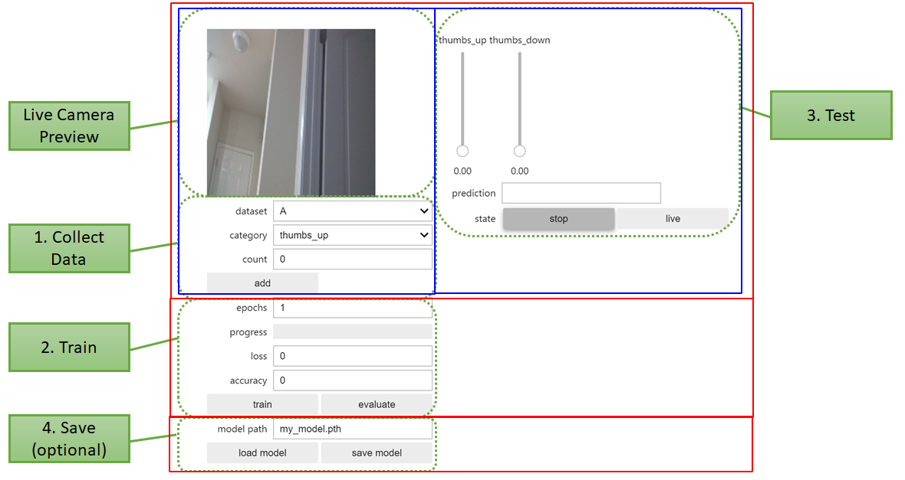
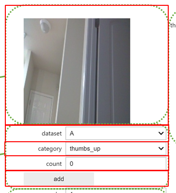
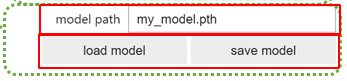
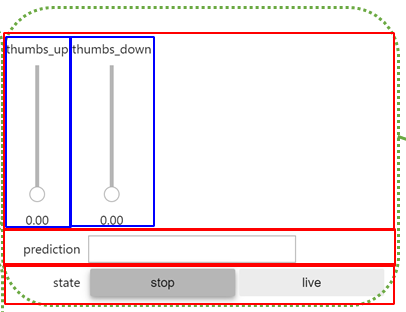
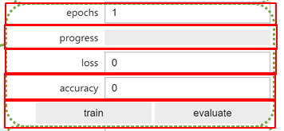

コードは大きく分けて
に分かれる。
ここではまずフォームの構成に注目して解析していく。
まず以下をインポート。
import ipywidgetsそして、色々した後にできるものが以下。（緑の注釈は公式によるもの）

xfrom IPython.display import display(略)# Combine all the widgets into one displayall_widget = ipywidgets.VBox([ ipywidgets.HBox([data_collection_widget, live_execution_widget]), train_eval_widget, model_widget])display(all_widget)赤枠がipywidgets.VBoxの中身で
ipywidgets.HBox（青枠）→data_collection_widget、live_execution_widgettrain_eval_widgetmodel_widgetの順で並ぶ。
VBox、HBoxはリスト（配列）を受け取る。
それぞれのWidgetはこのコードの前にすでに作っておく。
最後にdisplayでipywidgets.VBoxを表示すれば良い。
data_collection_widget全体像。

大きなVBoxの中にいくつかのWidget（赤枠）が入れられ、一つのWidgetの塊を作っている。
xxxxxxxxxx(略)# create image previewcamera_widget = ipywidgets.Image()(略)# create widgetsdataset_widget = ipywidgets.Dropdown(options=DATASETS, description='dataset')category_widget = ipywidgets.Dropdown(options=dataset.categories, description='category')count_widget = ipywidgets.IntText(description='count')save_widget = ipywidgets.Button(description='add')(略)data_collection_widget = ipywidgets.VBox([ ipywidgets.HBox([camera_widget]), dataset_widget, category_widget, count_widget, save_widget])xxxxxxxxxx(略)from jetcam.usb_camera import USBCamera(略)# for USB Camera (Logitech C270 webcam), uncomment the following linecamera = USBCamera(width=224, height=224, capture_device=0) # confirm the capture_device number(略)camera.running = True(略)import traitletsfrom jetcam.utils import bgr8_to_jpegcamera.unobserve_all()# create image previewcamera_widget = ipywidgets.Image()traitlets.dlink((camera, 'value'), (camera_widget, 'value'), transform=bgr8_to_jpeg)jetcam・・・Jetson Nanoでカメラを使う用にNVIDIAが作ったライブラリっぽい。
camera = USBCamera(...)：カメラインスタンスを生成
image = camera.read()：カメラで写真を撮る
（実際はOpenCVのVideoCaptureクラスのread()メソッドで取り込んでいるっぽいので、imageはnumpy.ndarray）
xxxxxxxxxximage_widget = ipywidgets.Image(format='jpeg')image_widget.value = bgr8_to_jpeg(image)display(image_widget)こうしてやることで取り込んだ写真を表示することができる。bgr8_to_jpegはjetcam内にある。実際はcv2.imencodeを使ってJPEGに変換しているらしい。
camera.running = true
これはUSBカメラの画像を連続的に（具体的にはwhile Trueループで）read()を実行する
camera.value：読み込んだ画像が収められる場所。running = trueだと連続的に値が変化する。
traitlets・・・クラスのメンバ変数のデフォルト値を決めたり、バリデーションしたり、値の変更を監視したりするライブラリ。jetcam.USBCamera内でも使われている。
camera.observe(関数, names=メンバ変数名)：メンバ変数の値が変わったら関数をコールバックするようにセットする。
xxxxxxxxxxcamera.running = truecamera.observe(関数, names=value)とすると、valueはrunning = trueによって常に変化するので関数がループ的に常に実行されることになる。
newとかoldとかをキーとする辞書）が渡されて実行されるらしい。ということは逆に関数の定義にはそれ用の引数を用意しておかないといけない。unobserve_all()：名前から察するに全てのobserveを解除する（つまり監視を止める）ということかな。
dlink((クラス1, メンバ変数名), (クラス2, メンバ変数名), transform=関数)：クラス1の指定メンバ変数が変更されたときに、クラス2のメンバ変数にも同じ値（またはtransformで指定した関数を通した値）をセットする。
dlinkはdirectional_linkのことらしい。linkというメソッドを使う。dataset_widget、category_widget）についてxxxxxxxxxx(略)DATASETS = ['A', 'B']# DATASETS = ['A', 'B', 'C'](略)dataset = datasets[DATASETS[0]](略)dataset_widget = ipywidgets.Dropdown(options=DATASETS, description='dataset')category_widget = ipywidgets.Dropdown(options=dataset.categories, description='category')(略)# sets the active datasetdef set_dataset(change): global dataset dataset = datasets[change['new']] count_widget.value = dataset.get_count(category_widget.value)dataset_widget.observe(set_dataset, names='value')# update counts when we select a new categorydef update_counts(change): count_widget.value = dataset.get_count(change['new'])category_widget.observe(update_counts, names='value')(略)dataset_widget、category_widgetはどちらも基本的には同じなので、dataset_widgetに注目して解析していく。
生成はdataset_widget = ipywidgets.Dropdown(options=リスト, description=ラベル)という書式。
引数として何が渡せるのかはdataset_widget.keysと書いて実行してみるとわかる。あとは公式ドキュメントを見て頑張る。
xxxxxxxxxxdataset_widget.keys['_dom_classes', '_model_module', '_model_module_version', '_model_name', '_options_labels', '_view_count', '_view_module', '_view_module_version', '_view_name', 'description', 'description_tooltip', 'disabled', 'index', 'layout', 'style']Widget Events — Jupyter Widgets 7.6.2 documentationにも書いてあるとおり、traitletsのobserveが使える。
dataset_widget.valueが現在選択している項目。
dataset_widget.observe(set_dataset, names='value')で、dataset_widgetのvalueが変化したとき、関数set_datasetが実行されるとわかる。
set_datasetはグローバル変数dataset（次回解説）の更新が主な目的。それに伴ってcount_widget.valueも更新しないといけない、ということ。Widget List — Jupyter Widgets 8.0.0a5 documentation
count_widget）についてxxxxxxxxxxcount_widget = ipywidgets.IntText(description='count')これについては特に変わったところは無い。IntTextで整数ボックス、BoundedIntTextで最大、最小などが指定できる整数ボックス、FloatTextで小数まで入力できるボックス、BoundedFloatTextで小数＋最大、最小が指定できるボックスが生成できる。
count_widget.valueで、テキストボックス内の数字の読み書きができるらしい。
Widget List — Jupyter Widgets 8.0.0a5 documentation
save_widget）についてxxxxxxxxxx(略)save_widget = ipywidgets.Button(description='add')(略)# save image for category and update countsdef save(c): dataset.save_entry(camera.value, category_widget.value) count_widget.value = dataset.get_count(category_widget.value)save_widget.on_click(save)ボタンについては、クリックしたときの動作はsave_widget.on_click(関数)で指定するらしい。関数の引数（ここではsave(c)のc）には、クリックされたボタンのインスタンスが代入される。
Widget List — Jupyter Widgets 8.0.0a5 documentation Widget Events — Jupyter Widgets 8.0.0a5 documentation
model_widget全体像

xxxxxxxxxx(略)import torch(略)model_save_button = ipywidgets.Button(description='save model')model_load_button = ipywidgets.Button(description='load model')model_path_widget = ipywidgets.Text(description='model path', value='/nvdli-nano/data/classification/my_model.pth')def load_model(c): model.load_state_dict(torch.load(model_path_widget.value))model_load_button.on_click(load_model) def save_model(c): torch.save(model.state_dict(), model_path_widget.value)model_save_button.on_click(save_model)model_widget = ipywidgets.VBox([ model_path_widget, ipywidgets.HBox([model_load_button, model_save_button])])ここではmodelとtorchを後で解析するとすれば、新たに出てきているのはipywidgets.Textのみ。
model_path_widget）について生成の書式はmodel_path_widget = ipywidgets.Text(description=ラベル, value=中の文字列)となる。
model_path_widget.valueでテキストボックス内の文字列にアクセスできる。observeを使えば中の文字列が変更されたときの動作を（多分）定義できる。
live_execution_widget
xxxxxxxxxximport threadingimport timefrom utils import preprocessimport torch.nn.functional as Fstate_widget = ipywidgets.ToggleButtons(options=['stop', 'live'], description='state', value='stop')prediction_widget = ipywidgets.Text(description='prediction')score_widgets = []for category in dataset.categories: score_widget = ipywidgets.FloatSlider(min=0.0, max=1.0, description=category, orientation='vertical') score_widgets.append(score_widget)def live(state_widget, model, camera, prediction_widget, score_widget): (略)def start_live(change): if change['new'] == 'live': execute_thread = threading.Thread(target=live, args=(state_widget, model, camera, prediction_widget, score_widget)) execute_thread.start()state_widget.observe(start_live, names='value')live_execution_widget = ipywidgets.VBox([ ipywidgets.HBox(score_widgets), prediction_widget, state_widget])ここでは関数liveを読み飛ばせば、そこまで複雑なことはしていない。
state_widget）についてxxxxxxxxxxstate_widget = ipywidgets.ToggleButtons(options=['stop', 'live'], description='state', value='stop')これはボタンが複数並び、どれか一つが選択状態になるというもの。optionsにリストを代入すると、そのリストの要素数だけボタンが生成され、必ずどれが一つが選択状態になるということかな。
何が選択されているのかはstate_widget.valueで取得できる。
以下のように書くと、選択が変更されたときに発火する動作を定義できる。
xxxxxxxxxxstate_widget.observe(start_live, names='value')その動作は、liveという関数（後述）を別スレッドで動かすというものらしい。
xxxxxxxxxxdef start_live(change): if change['new'] == 'live': execute_thread = threading.Thread(target=live, args=(state_widget, model, camera, prediction_widget, score_widget)) execute_thread.start()score_widget）についてxxxxxxxxxxscore_widget = ipywidgets.FloatSlider(min=0.0, max=1.0, description=category, orientation='vertical')スライダーなので当然最大最小がある。ラベルはdescriptionで指定し、valueは勝手に表示されるらしい。orientationで縦か横かを指定できる。
train_eval_widget
xxxxxxxxxx(略)epochs_widget = ipywidgets.IntText(description='epochs', value=1)eval_button = ipywidgets.Button(description='evaluate')train_button = ipywidgets.Button(description='train')loss_widget = ipywidgets.FloatText(description='loss')accuracy_widget = ipywidgets.FloatText(description='accuracy')progress_widget = ipywidgets.FloatProgress(min=0.0, max=1.0, description='progress')def train_eval(is_training): (略) train_button.on_click(lambda c: train_eval(is_training=True))eval_button.on_click(lambda c: train_eval(is_training=False)) train_eval_widget = ipywidgets.VBox([ epochs_widget, progress_widget, loss_widget, accuracy_widget, ipywidgets.HBox([train_button, eval_button])])train_evalの中身は次回に回すとしたら、ここでしていることとしてはウィジェットを作って配置しているだけ。
progress_widget）についてxxxxxxxxxxprogress_widget = ipywidgets.FloatProgress(min=0.0, max=1.0, description='progress')スライドバーのスライドできないバージョンみたいな扱い。現在値も特にデフォルトでは表示されないらしい。
非エンジニアでも使いやすい高機能なPython環境「IPython」「Jupyter」を使ってみよう | さくらのナレッジ GitHub - NVIDIA-AI-IOT/jetcam: Easy to use Python camera interface for NVIDIA Jetson Python, OpenCVで動画を読み込み（ファイル・カメラ映像） | note.nkmk.me jupyterを支える技術：traitlets（の解読を試みようとした話） - Qiita traitlets/traitlets.py at main · ipython/traitlets · GitHub Widget List — Jupyter Widgets 8.0.0a5 documentation